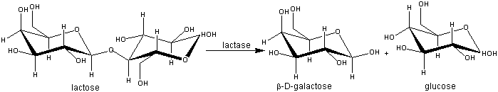

Enzyme Technology
The use of lactases in the dairy industry
Lactose is present at concentrations of about 4.7% (w/v)
in milk and the whey (supernatant) left after the coagulation stage of
cheese-making. Its presence in milk makes it unsuitable for the majority of the
world's adult population, particularly in those areas which have traditionally
not had a dairy industry. Real lactose tolerance is confined mainly to peoples
whose origins lie in Northern Europe or the Indian subcontinent and is due to
'lactase persistence'; the young of all mammals clearly are able to digest milk
but in most cases this ability reduces after weaning. Of the Thai, Chinese and
Black American populations, 97%, 90% and 73% respectively, are reported to be
lactose intolerant, whereas 84% and 96% of the USA White and Swedish populations,
respectively, are tolerant. Additionally, and only very rarely some individuals
suffer from inborn metabolic lactose intolerance or lactase deficiency, both of
which may be noticed at birth. The need for low-lactose milk is particularly
important in food-aid programmes as severe tissue dehydration, diarrhoea and
even death may result from feeding lactose containing milk to lactose-intolerant
children and adults suffering from protein-calorie malnutrition. In all these
cases, hydrolysis of the lactose to glucose and galactose would prevent the
(severe) digestive problems.
Another problem presented by lactose is its low solubility
resulting in crystal formation at concentrations above 11 % (w/v) (4°C). This
prevents the use of concentrated whey syrups in many food processes as they have
a unpleasant sandy texture and are readily prone to microbiological spoilage.
Adding to this problem, the disposal of such waste whey is expensive (often
punitively so) due to its high biological oxygen demand. These problems may be
overcome by hydrolysis of the lactose in whey; the product being about four
times as sweet (see Table 4.3), much more soluble and capable of forming
concentrated, microbiologically secure, syrups (70% (w/v)).
Lactose may be hydrolysed by lactase, a b-galactosidase.
 D-glucose + beta-D-galactose" width="699" height="130">
[4.3]
Commercially, it may be prepared from the dairy yeast
Kluyveromyces fragilis (K. marxianus var. marxianus), with a pH optimum (pH
6.5-7.0) suitable for the treatment of milk, or from the fungi Aspergillus
oryzae or A. niger, with pH optima (pH 4.5-6.0 and 3.0-4.0, respectively) more
suited to whey hydrolysis. These enzymes are subject to varying degrees of
product inhibition by galactose. In addition, at high lactose and galactose
concentrations, lactase shows significant transferase ability and produces
b-1,6-linked galactosyl oligosaccharides.
Lactases are now used in the production of ice cream and
sweetened flavoured and condensed milks. When added to milk or liquid whey (2000
U kg−1) and left for about a day at 5°C about 50% of the lactose is hydrolysed,
giving a sweeter product which will not crystallise if condensed or frozen. This
method enables otherwise-wasted whey to replace some or all of the skim milk
powder used in traditional ice cream recipes. It also improves the 'scoopability'
and creaminess of the product. Smaller amounts of lactase may be added to
long-life sterilised milk to produce a relatively inexpensive lactose-reduced
product (e.g., 20 U kg−1, 20°C, 1 month of storage). Generally, however, lactase
usage has not reached its full potential, as present enzymes are relatively
expensive and can only be used at low temperatures.
Home
| Back | Next
This page was established in 2004 and last updated by Martin
Chaplin
on
8 November, 2015
|